Volkswagen
История концерна «Volkswagen» началась осенью 1933 года в одном из залов отеля «Кайзерхоф» (нем. Kaiserhof) в Берлине. Собеседников было трое: Адольф Гитлер (нем. Adolf Hitler), Якоб Верлин (нем. Jacob Werlin), представитель «Daimler-Benz» и Фердинанд Порше (нем. Ferdinand Porsche). Гитлер выдвинул требование: создать для немецкого народа крепкий и надёжный автомобиль стоимостью не более 1000 рейхсмарок. Также, автомобиль должен был собираться и на новом, олицетворяющем новую Германию, заводе. На листке бумаги Гитлер набросал эскиз, обозначил основные пункты программы и попросил назвать имя конструктора, кто будет нести ответственность за исполнение правительственного заказа. Якоб Верлин предложил кандидатуру Фердинанда Порше. Будущий автомобиль так и назвали — «Volks-Wagen» («народный автомобиль»). 17 января 1934 года Фердинанд Порше переслал чертежи прототипа «народного автомобиля», созданного на базе разработанного ранее Porsche Typ 60, в Рейхсканцелярию Германии.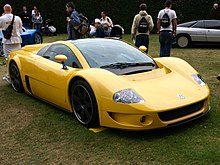
Volkswagen W12 Syncro Concept В июне 1934 года был подписан контракт между RDA (нем. Reichsverband der Automobilindustrie) или «Имперской автомобильной ассоциацией», и «Dr. Ing. h.c. F. Porsche GmbH» (Konstruktionen und Beratungen für Motoren und Fahrzeugbau) — компанией Фердинанда Порше, на разработку трёх прототипов «народного автомобиля». Месячный бюджет проекта составил 20 тыс. рейхсмарок при ограничении по времени — 10 месяцев на все разработки. В качестве основных характеристик должны быть учтены следующие данные: 5 посадочных мест, ширина колеи — 1200 мм, расстояние между осями — 2500 мм, максимальная мощность — 26 л. с., максимальные обороты — 3500 об/мин, неснаряжённый вес — 650 кг, цена при продаже — 1550 рейхсмарок, максимальная скорость — 100 км/ч, максимальный уклон подъёма — 30 %, средний расход топлива — 8 литров на 100 км.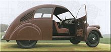
Porsche Typ 12 (1931) Несмотря на уже имевшиеся конструкции и опыт, необходимость уложиться в положенные рамки затянула работы на два года. Прототипы были готовы только в сентябре 1936 года: двухдверный V1, кабриолет V2 (по заказу Гитлера) и четырёхдверный V3. 50 тыс. километров испытательного пробега не выявили у машин каких-либо серьёзных недостатков, и Порше дали заказ на последующие 30 прототипов, которые были произведены на заводе Daimler-Benz. Тестирование новых прототипов возложили на DAF (нем. Deutsche Arbeitsfront) (Германский Трудовой Фронт) — нацистскую профсоюзную организацию. А контроль тестирования и принятие окончательного решения по его (тестирования) итогам осуществляли непосредственно сотрудники СС (нем. SS или Schutzstaffel). 28 мая 1937 года основана компания «Gesellschaft zur Vorbereitung des Deutschen Volkswagens GmbH» («Общество с ограниченной ответственностью по подготовке Немецкого народного автомобиля») и, уже позже, 16 сентября 1938 года, переименована в Volkswagenwerk GmbH.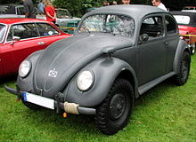
VW Typ 82 Kommandeurwagen 26 мая 1938 года был заложен первый камень на строительстве завода Volkswagen рядом с городом Фаллерслебен. В церемониальной речи Гитлер озвучивает имя будущего «народного автомобиля» — KdF-Wagen, названного в честь KdF (Kraft durch Freude) — нацистской общественной организации, вложившей порядка 50 млн рейхсмарок в строительство завода. В том же году было начато строительство городка для проживания работавших на заводе Volkswagen — Stadt des KdF-Wagens. Название в 1945 году изменили на Вольфсбург (по имени находившегося по соседству замка Вольфсбург). В 1939 году были выпущены две модели для демонстрации производственных возможностей завода: V38s («пробная модель») и V39s («демонстрационная модель»). На них уже были заметны сделанные изменения в конструкции, как то улучшенные дверные петли и увеличенные дверные ручки, наличие двух задних окон в салоне и т. п. Но KdF-Wagen так и не смог стать автомобилем массового производства по причине загруженности промышленности выполнением крупных военных заказов и начала Второй мировой войны.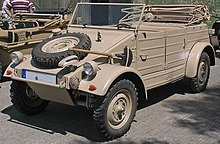
VW Typ 82 Kübelwagen В 1938 году был разработан прототип армейского полноприводного автомобиля VW Typ 82 (Kübelwagen), запущенный в производство как VW Typ 82. Кузов был собран из тонких жестяных продольно усиленных листов, имел четыре двери, складное лобовое стекло и брезентовую откидную крышу. Всего было выпущено более 50 тыс. автомобилей. Они использовались во всех войсках Германии до окончания Второй мировой войны для перевозки личного состава, подвоза боеприпасов и топлива, эвакуации раненых и в качестве передвижных мастерских. На базе VW Typ 82 было создано более 30 модификаций многоцелевых автомобилей. В 1940 году на базе VW Typ 82 был разработан прототип автомобиля-амфибии — VW Typ 128 Schwimmwagen. В 1941 году 30 амфибий, произведённых на заводе в Вольфсбурге, поступили в армейские инженерные части, где получили хорошие отзывы. В этом же году Фердинанд Порше получил заказ на дальнейшую модификацию автомобиля. Модель VW Typ 166 Schwimmwagen (или Vorserienschwimmwagen) был короче, легче и манёвреннее предшественника и выпускалась на заводе Daimler-Benz в Штутгарте. За годы войны (1941—1945) было выпущено порядка 15 тыс. амфибий.Toyota
Toyota Motor Corporation — крупнейший японский автопроизводитель со штаб-квартирой в городе Тойота. Занимается изготовлением легковых, коммерческих и грузовых автомобилей, автобусов и автокомплектующих. Удерживает звание самой крупной автомобилестроительной компании в мире по объемам продаж. История автокомпании Toyota началась в 1933 году, как отдельного подразделения крупной Toyoda Automatic Loom Works, занимавшейся выпуском ткацких станков. Сакичи Тойода, основатель компании, был талантливым инженером и изобретателем. Он первым в Японии создал собственный автоматический ткацкий станок и непрерывно совершенствовал свое творение. Его компания стала успешной на японском рынке и знаменитой во всем мире. В начале 30-х годов устройство станков Тойоды привлекло внимание крупнейшей в то время текстильной мануфактуры мира — британской фирмы Platt Brother&Co. Сакичи согласился продать патентные права на станок, а для оформления сделки в Великобританию отправился его сын Киичиро. Стоит отметить, что автомобиль — одно из главных инженерных изобретений того времени — увлекал и занимал ум Сакичи Тойода. Интерес к автомобилям перенял и его сын. Однако, побывав в Англии, он буквально «заболел» идеей создания собственного автомобильного производства. Выручив от продажи патентных прав 100 000 фунтов стерлингов, Киичиро Тойода основывает новое подразделение в составе компании отца, которое сосредоточилось на разработке автомобилей. В 1937 году оно отделилось в Toyota Motor Corporation. Работу новой компании поддержало правительство Японии, которому были нужны армейские грузовики для войны в Маньчжурии. Из-за депрессии в стране было мало денег. Внутреннее производство позволяло снизить затраты, обеспечить рабочие места и сделать страну более независимой. К 1936 году, как раз после того, как были созданы первые успешные автомобили Toyota, власти Японии потребовали, чтобы большинство акций всех автопроизводителей принадлежали резидентам страны, а также остановили почти весь импорт. Операции по созданию автомобилей курировал Киичиро Тойода. Он начал экспериментировать с двухцилиндровыми двигателями, но в конечном итоге повторил устройство шестицилиндрового мотора Chevrolet мощностью 65 л.с. Кроме того, марка скопировала шасси и коробку передач Chrysler Airflow. Первый двигатель был произведен в 1934 году (Type A), первый автомобиль и грузовик — в 1935-м (Model A1 и G1 соответственно), а вторая модель, которая пошла в производство, — в 1936-м (Model АА). Сборку автомобилей наладили в местечке Коромо на новых производственных мощностях. Первый легковой автомобиль Toyota комплектовался мотором объемом 3389 куб. см и барабанными тормозами для каждого колеса. Четырехдверный седан с обычными передними и суицидальными задними дверьми получил плоское цельное ветровое стекло с расположенным вверху стеклоочистителем и запасное колесо, которое крепилось на почти вертикальном заднем стекле. Полностью металлический корпус был передовым для того времени, поскольку в основном использовались деревянные элементы кузова. С 1936 по 1943 год было выпущено 1 404 седана AA.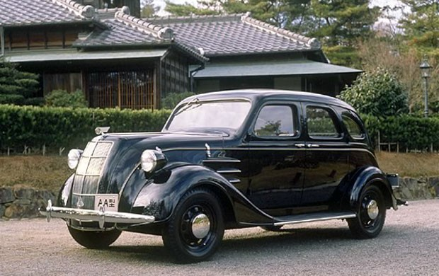
Toyota Model АА (1936–1943)Во время Второй мировой войны Toyota полностью отказалась от изготовления гражданских автомобилей. На предприятиях автопроизводителя выпускались военные грузовики, амфибии, легкие разведывательные вездеходы, комплектующие боевых самолетов. При этом сборка производилась ускоренными темпами, часто в упрощенном варианте. Например, грузовики выпускались с одной фарой. После капитуляции Японии Toyota Motor, как и все снабжавшие армию компании, оказалась в незавидном положении. Несмотря на то что заводы автопроизводителя мало пострадали от бомбардировок, на выпуск транспортных средств был наложен запрет. В декабре 1945 года Toyota получила разрешение от вооруженных сил Соединенных Штатов на запуск изготовления товаров для хозяйственного потребления. До 1947 года на заводах выпускались инструменты и кастрюли. Однако Киичиро Тойода не собирался отказывать от своей страсти: сразу же после окончания войны конструкторы марки приступили к разработке новой модели. С учетом послевоенного упадка это была маленькая и экономичная модель — двухдверный седан SA. Она комплектовалась четырехцилиндровым 1,0-литровым двигателем мощностью 27 л.с. с классической компоновкой. Внешне Toyopet, как его называли, был схож с Volkswagen Beetle. Он разгонялся до максимальной скорости в 88 км/час, был дешевым и нетребовательным.
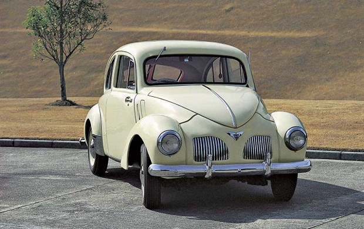
Toyota SA (1947–1952) Кроме SA в «семейство» Toyopet входили более успешная SD, модель SF, которая сделала марку по-настоящему популярной и RH с 48-сильным двигателем. К 1955 году Toyota выпускала 8 400 автомобилей в год, а к 1965-му — 600 000. В дополнение ко всем этим авто Toyota начала производить гражданские грузовики под именем Land Cruiser. Они были разработаны по примеру джипов. Первое поколение основывалось на шасси грузовика грузоподъемностью 1000 кг. Это был первый в мире полноприводный легковой автомобиль с шести-, а не с четырехцилиндровым мотором. В 1953 году было выпущено 298 экземпляров внедорожников, которые большей частью попали в службы Министерства лесного и сельского хозяйства Японии, а также полицейского резерва. В 1955 году вышло второе поколение внедорожника.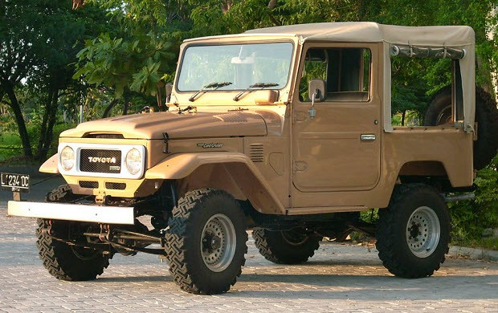
Toyota Land Cruiser BJ (1953) В начале 1950-х годов Toyota вводит на производстве ряд принципов, которые помогли ей завоевать репутацию автопроизводителя, выпускающего одни из самых качественных авто в мире. Принцип Just-in-time позволил сэкономить на издержках и складских территориях, сделав производство точным как часы. Еще в текстильном прошлом компании автоматические станки останавливались, как только обнаруживали порванную нить. Этот же принцип был внедрен в автосборочное производство. Каждый работник следил за качеством используемых деталей и компонентов на своем участке. В случае обнаружения брака или поломки он дергал за специальный шнур, который останавливал конвейерную ленту. Так все недочеты выявлялись на ранней стадии, и бракованные автомобили не доходили до рынка. Следующим нововведением стала система поощрения инициативы и рационализаторских предложений работников, что позволило в разы повысить эффективность производства и мотивацию персонала. Успешные предложения внедрялись, а рационализаторы получали денежное вознаграждение. В 1955 году выходит первый роскошный автомобиль Toyota Crown, который питался от четырехцилиндрового 1,5-литрового двигателя. В 1957 году компания выходит на американский рынок, куда экспортирует две модели — Land Cruiser BJ и седан Crown. В 1959 году компания открыла свой первый завод за пределами Японии — в Бразилии. С этого момента Toyota сохранила философию локализации как производства, так и разработки дизайна своей продукции. Выход компании на североамериканский рынок не был настолько удачным, как ожидалось. За первый год было реализовано только 288 автомобилей. Они не могли тягаться с американскими конкурентами ни по внешнему виду, ни по динамике, ни по престижности. Президент по продажам Шотаро Камайя внедряет новые принципы в корпоративную философию: на первом месте находится клиент, а не автомобиль. В начале 60-х прожорливые американские автомобили с огромным двигателем еще были на пике популярности. Но уже слышалась тихая, но не замолкающая песнь малолитражек, ставших фаворитами следующего десятилетия. Модель Toyota Corona была одним из голосков новой автомобильной тенденции. Автомобиль представили в мае 1957 года. Он комплектовался 33-сильным мотором, был надежным, недорогим и экономичным, что сделало его довольно популярным на фоне бума рождаемости. В апреле 1958 года модель получила феслифтинг, означавший изменение капота и дверных ручек. В задней части появились элементы, напоминающие седаны Ford 1949 года выпуска. Двигатель заменили на 45-сильный 997-кубовый, который разгонял автомобильчик до 105 км/час. Благодаря кузову монокок модель весила 1000 кг.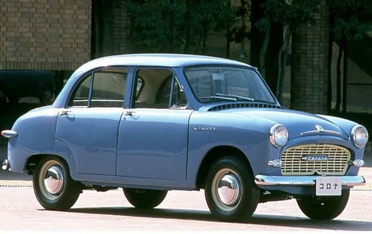
Toyota Corona (1957–2002) В 1962 году Toyota выпускает миллионный автомобиль, а спустя 10 лет общий объем производства автомобилей достиг 10 млн единиц. В конце 60-х самым продаваемым автомобилем в мире становится Toyota Corolla. Позднее это достижение будет занесено в Книгу рекордов Гиннесса. По состоянию на декабрь 2000-го всего было реализовано 25 млн единиц модели. Уже к 2006 году суммарный объем выпуска составил 32 млн. Машина оснащалась системой заднего привода и продольно расположенным двигателем. Эта компоновка не менялась до 1984 года, когда появилась первая переднеприводная Corolla. Первое поколение автомобиля продавалось только на внутреннем рынке. Второе поколение характеризовалось более скругленными линиями кузова. Оно было представлено двумя моделями — Sprinter и Corolla, которые отличались материалом листового металла кузова и внутренней отделкой. Всего было выпущено 11 поколений модели.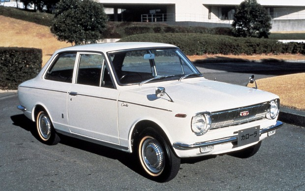
Corolla (1966) В 1967 году выходит легендарный 2000 GT – спортивный автомобиль с кузовом купе, разработанный вместе с Yamaha. Он стал демонстрацией способности японского автопроизводителя изготавливать не только доступные малолитражки, но и статусные спорткары. По динамике 2000 GT не уступал Porsche 911: разгон до 100 км/час – за 8,4 секунды, «максималка» – 220 км/час. Он комплектовался рядным шестицилиндровым мотором объемом 2 л и мощностью 150 л.с. Особого ажиотажа вокруг модели не наблюдалось: всего было выпущено только 351 единиц. Это объяснялось по большей мере высокой ценой машины. Однако сейчас она представляет собой коллекционный интерес, да и в те времена поставила японского автопроизводителя в один ряд с самыми маститыми акулами из автомира.
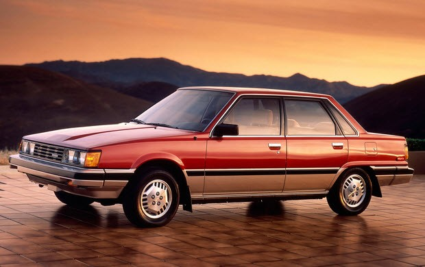
Toyota Camry (1982) В 1990 году Toyota начинает разбавлять модельный ряд, состоящий в основном из компактных моделей, более крупными и роскошными автомобилями. Появляется пикап T100, а позднее и Tundra, выходит несколько внедорожников, спортивная версия Camry, а также несколько спортивных и доступных автомобилей, направленных на молодых людей. В технологическом плане появляются такие новшества, как двигатель с системой изменения фаз газораспределения (VVT-i), а также четырехтактный бензиновый мотор с непосредственным впрыском топлива (D-4). Ведутся разработки в области гибридных технологий, результатом которых становится выход в 1997 году модели Prius, первого серийного гибрида в мире. Эта модель также примечательна тем, что занесена журналом Forbes в десятку автомобилей, которые изменили мир. А журнал Time включил его в рейтинг самых влиятельных людей мира, нисколько не заботясь о том, что это не человек. Модель оснащается бензиновым мотором и электрическим двигателем-генератором, а также емким аккумулятором. Система рекуперативного торможения может превращать кинетическую энергию в электричество и подзаряжать аккумулятор. Управляемые бортовым компьютером силовые агрегаты могут работать вместе и по отдельности. Коэффициент аэродинамического сопротивления равен 0,26, а с 2009 года — 0,25. Характерной особенностью модели является отсутствие холостого хода двигателя, который выключается при кратковременных остановках.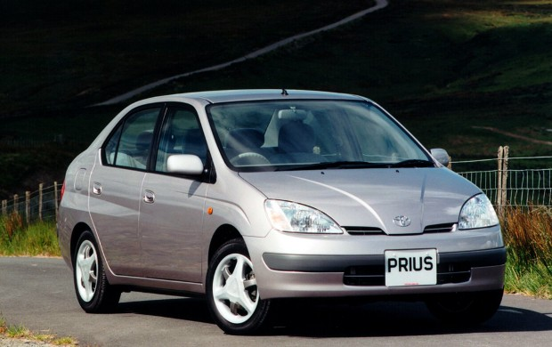
Toyota Prius (1997) В 1998 году Toyota Motor Corporation открыла московское представительство. Продажи японской марки были впечатляющими, а российский рынок демонстрировал тенденцию к росту, поэтому автопроизводитель принял решение о создании национальной компании по маркетингу и продажам. С апреля 2002 года начало работать ООО «Тойота мотор». С 2007 года в России функционирует ЗАО «Тойота Банк» с представительством в Москве и Санкт-Петербурге. Он занимается выдачей автокредитов для населения и официальных дилеров Toyota и Lexus. 21 декабря 2007 года состоялось открытие завода Toyota в поселке Шушары, недалеко от Санкт-Петербурга. Планируется довести мощность автосборочного предприятия до 200–300 тысяч автомобилей в год. В 2011 году Toyota пострадала от ряда стихийных бедствий, которые отрицательно сказались на показателях ее деятельности и объемах продаж. Землетрясения и цунами привели к нарушению поставок, остановке производства и падению экспорта. От сильного наводнения в Таиланде пострадала местная производственная база. Toyota потеряла около 150 000 автомобилей в результате цунами и примерно 240 000 единиц — после наводнения. С ноября 2009 по 2010 год марка отозвала более 9 миллионов автомобилей и грузовиков по всему миру, а также на время остановила производство и продажи. Жалобы относились к непреднамеренному ускорению транспортных средств. Сейчас компания Toyota Motor выпускает широкий модельный ряд автомобилей — от легковых, кроссоверов и пикапов до грузовых и автобусов. Кроме того, она ведет разработки в области создания транспортных средств с гибридной и электрической трансмиссией, а также на водородных топливных элементах.General Motors
General Motors Corporation образовалась в результате объединения нескольких производителей автомобилей. Старейшая из образовавших корпорацию компаний была основана Р. Э. Олдсом в 1892 году в Детройте под названием Olds Motor Vehicle Company. На рубеже веков также в Детройте Генри Лиланд, до этого работавший на заводе Олдса, основал Cadillac Automobile Company, а Дэвид Бьюик — Buick Motor Company. Для избежания конкуренции, в 1903 году по инициативе директора Buick Уильяма Дюранта была создана корпорация General Motors, в которую вошли Olds Motor Vehicle Company и Buick, в 1909 году к ним присоединились компании Cadillac и Oakland (переименованная в Pontiac). В последующие годы General Motors поглотила ряд небольших производителей автомобилей, в 1918 году в состав корпорации вошла компания Chevrolet, а в 1920 году — канадская McLaughlin Motor Company, позже ставшая дочерней компанией General Motors of Canada Limited. Также в 1920 году была присоединена Dayton Engineering Laboratories, компания изобретателя стартера Чарльза Кеттеринга (Charles F. Kettering), а сам Кеттеринг стал научным директором GM. В 1917—1919 годах до 90 % продукции GM было военного назначения[8]. В 1923 году президентом GM стал Альфред Слоун (занимал этот пост до 1956 года), под его руководством началась зарубежная экспансия корпорации: в 1925 году была куплена британская компания Vauxhall Motors, а в 1931 году — немецкая Adam Opel; также была значительно увеличена доля на американском рынке — с 12 % в 1921 году до 44 % в 1941 году. С 1940 по 1945 год GM произвела военной продукции на 12,3 млрд долларов, в том числе 1300 самолётов и четверть всех авиационных двигателей в США. На войну в Корее также было направлено до 19 % производственных мощностей GM[8]. 1950-е годы были отмечены рядом новшеств в автомобилях, производимых GM. С 1950 года все марки автомобилей стали доступны с автоматической коробкой передач, с 1955 года — восьмицилиндровые двигатели, была улучшена аэродинамика машин, электропитание переведено с 6 на 12 вольт, появились усилители руля и тормозов, а также кондиционеры и ремни безопасности. Однако с середины 1950-х годов всё большую популярность в США начали приобретать европейские автомобили. В 1956 году продажи детройтских гигантов автомобилестроения (GM, Ford, Chrysler) упали на 15 %, в 1957 году в США импорт машин превысил их экспорт, ввезённые автомобили составили 8 % от продаж в США, в то время как доля GM на рынке в 1959 году снизилась до 42 %. В 1960-х положение компаний усугубилось беспорядками в обнищавших пригородах Детройта. На трудности GM прореагировала расширением сферы деятельности: корпорация начала заниматься бытовой техникой, страхованием, локомотивами, электроникой, подшипниками, банкингом и финансовыми услугами. Благодаря этому рентабельность инвестиций у GM в конце 1960-х выросла с 16,5 % до 25,8 % (в среднем по отрасли — 13 %)[8]. В 1974 году цена на нефть резко возросла вследствие введения эмбарго на импорт из стран ОПЕК, также в США был принят закон, вводивший жёсткие ограничения на загрязнение воздуха, что в сумме сильно ударило по GM, также как по Ford и Chrysler. В 1980-х годах выручка GM неуклонно снижалась, но в то же время было потрачено более 60 млрд долларов на обновление модельного ряда автомобилей, а также на модернизацию заводов. В 1984 году была куплена компания Electronic Data Systems (связь и хранение данных), а в 1986 году компания Hughes Aircraft (самолёты). В 1990 году GM приобрела 50-процентную долю у шведского автопроизводителя Saab Automobile AB, тогда же была создана дочерняя компания по производству малолитражных автомобилей в Теннесси Saturn Corporation. За три года (1990—1992) чистый убыток корпорации составил в сумме 30 млрд долларов, доля на рынке США сократилась до 35 %[8]. В 1992 году GM возглавил Джэк Смит, которому доверили дело возрождения корпорации. Уже в том же году численность персонала в центральном офисе была сокращена с 13 500 до 2300, к 1996 году было закрыто 24 завода и уволено 65 тысяч сотрудников, проданы подразделения по производству деталей. Эти меры, а также снижение курса доллара (что делало импортные товары дороже), позволило в 1993 году получить чистую прибыль 2,47 млрд долларов при обороте 138,22 млрд долларов, а в 1995 году чистая прибыль составила 6,88 млрд долларов при рекордной выручке 163,86 млрд долларов. Однако доля на рынке продолжала падать, до 31 % в 1995 году и ниже 30 % в 1999 году. Сокращение доли на домашнем рынке корпорация попыталась компенсировать расширением присутствия на азиатском и европейском рынке: в 1999 году была куплена 20-процентная доля в Fuji Heavy Industries, производителей автомобилей Subaru; в 2000 году также 20 % в компании Fiat Auto S.p.A. и установлен полный контроль над Saab; в 2002 году куплена часть южнокорейской Daewoo Motor Company[8].Honda
Honda – компания, основанная в 1946 году японским инженером, изобретателем и автогонщиком Соичиро Хонда (Soichiro Honda), родившимся в 1906 году. Компания в ее нынешнем виде и со всей своей более чем 50-летней историей существует благодаря его дерзкому, изобретательному и нестандартному образу мышления и поведения. Typa-47XРодившийся в бедной семье Хонда, не закончив школу, уже в 16 лет поступил учеником в авторемонтную мастерскую в Токио. Ранняя привязанность к автотранспорту была обусловлена профессией его отца – кузнеца, занимавшегося починкой велосипедов и привившего сыну навыки решения технических проблем. В 1928 году, накопив достаточно денег, он вернулся в родной город в провинции Хамаматсу и открыл там первую ремонтную мастерскую. В этом же году он получил первый из сотен своих последующих патентов – за идею заменить в колесе деревянные спицы на металлические. Изобретения Хонды в будущем принесли ему славу человека, способного находить простые решения для сложных проблем. В 1938 году он изобрел поршневое кольцо; производством колец и занималась основанная им в 1937 году компания Tokai Seiki Heavy Industry. Dreamsa-55Tanaka Isleofman 59В 1945 году, после того, как его фабрика серьезно пострадала во время войны и землетрясения, Хонда продает Tokai Seiki компании Toyota за 450 тысяч йен. Однажды приделав мотор к своему велосипеду и создав таким образом мопед, а потом собрав еще с десяток таких мопедов для своих друзей, Хонда решает всерьез заняться производством подобных машин. В 1946 году он основал компанию под названием «Институт технических исследований Хонда» (Honda Technical Research Institute), а в 1947 году началось производство первого продукта компании – 2-тактного двигателя A-type объемом 50 куб. см. Через год, в 1948, компания была перерегистрирована и названа в соответствии с духом времени – Honda Motor Company – и приступила к разработке и производству мотоциклов. Первый мотоцикл компании, получивший название Dream («мечта») и оснащенный двигателем объемом 98 куб.см, был выпущен в 1949 году. Тогда же в компанию пришел работать Такео Фуджисава – человек, по праву считающийся вторым отцом-основателем компании. Между ним и Хондой существовало разделение обязанностей – Хонда занимался технологиями производства, Фуджисава – корпоративным управлением и продажами. Suzuka Circuit-1Honda S500В 1950 году открылся филиал компании в Токио; там же была куплена швейная фабрика и переделана в завод по выпуску мотоциклов, на котором началось производство мотоцикла Dream Type D, который в 1951 году был заменен на Dream Type E – новую разработку, развивавшую максимальную скорость в 70 км/ч. В 1952 году головной офис Honda переместился в Токио, в провинции Сайтама открылся завод Shirako, появился новый двигатель Cub Type F объемом 50 куб.см и мощностью 1,2 л.с. Honda F-11953 год – открылись еще два завода, организовался профсоюз и была введена система принятия предложений рабочих, началось производство Benly J-type. В следующем, 1954 году акции Honda Motor начинают продаваться на токийской бирже, стартует продажа скутера Juno K-type и его экспорт в США, и благодаря технологическому прорыву Honda получает возможность участвовать в мотоспорте – ее команда принимает участие в международной мотогонке Sao Paulo в Бразилии и Isle of Man TT в Великобритании. Соичиро Хонда едет с ознакомительным визитом на Isle of Man и знакомится с европейской автомобильной промышленностью. В 1955 году компания стала лидером по выпуску мотоциклов в Японии, уничтожив огромное количество конкурентов; Honda приняла участие в первой японской гонке Motorcycle Endurance Road Race и выиграла в классах 350 и 500 куб.см, получив к тому же приз за конструкцию. Были выпущены новые модели – Benly JB, Dream SA, Dream SB-type. В 1956 году были разработаны корпоративные принципы, которых компания придерживается до сих пор. Открылся сервисный отдел и была введена в действие годовая гарантия на продукцию. В 1957 на заводе Shirako открылся центр исследований и разработок, акции Honda Motor попали в первую часть списка на токийской бирже. Команда Honda заняла первое место в гонке гонке Mt. Asama Race в классе 350 куб.см. Дальнейшие победы Honda в гонках мотоциклов так многочисленны, что их не имеет смысла перечислять. В 1958 году вышла модель Super Cub, а в 1959 Honda по производству мотоциклов стала крупнейшей компанией в мире. Кроме этого, в 1959 году была учреждена компания American Honda Motor в США.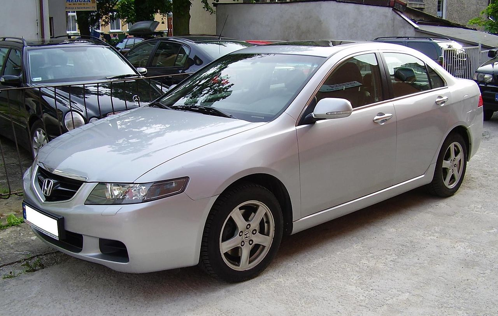
Honda CivicHonda PreludeВ 1960 году центр исследований и разработок выделяется в отдельную компанию – Honda R & D Co., Ltd., а в 1961 объем продаж мотоциклов Honda достигает 100000 в месяц – впервые в этой отрасли. Начинается производство мотоциклов в Тайване и открывается представительство в Германии – Honda Deutchland GmbH. В 1962 году Honda создала завод по выпуску собственного производственного оборудования; для этой компании создание собственного оборудования имеет принципиальное значение. Этот завод впоследствии стал основой компании Honda Engineering Co., Ltd. Тогда же открылось представительство в Бельгии – для сборки и продажи мотоциклов в Европе; был построен спортивный комплекс Suzuka Circuit; была запущена рекламная кампания под слоганом «Лучшие люди ездят на Хонде» ("You Meet the Nicest People on a Honda"). Эта кампания стоила 5 млн. долларов и способствовала популяризации мотоцикла и созданию нового его имиджа – "веселого семейного средства передвижения для среднего класса". Укрепив таким образом свои позиции на рынке мотоциклов, Honda вступила на рынок автомобилей, представив в 1963 году свой первый автомобиль – небольшую спортивную модель S500. При этом Соичиро Хонда в очередной раз проявил свой знаменитый бунтарский характер, проигнорировав заявления японского министерства международной торговли и промышленности о том, что Японии не нужен еще один автопроизводитель. Кроме S500, Honda выпустила еще и легкий грузовик T360. На заводе Honda Benelux N.V. в Бельгии начинается производство мотоциклов. В 1964 году Honda впервые заявила о своих планах участия в гонках Formula 1; ее команда выступила в классе 1500 куб.см на гонках в Германии в том же году. Открывается система сервисных заводов (S.F.) и по всей Японии начинается их строительство. Тогда же открылось представительство во Франции (Honda France S.A.), а S500 победил на 600-километровых гонках в Нюрбургринге. В провинции Сайтама открывается завод Sayama, рассчитанный на массовое автомобильное производство. Следующий, 1965 год, стал годом первой победы Honda в Формуле-1 – в Мехико, в классе 1500 куб.см Honda выигрывает Гран-При. В Лондоне открывается великобританское представительство Honda; начинает экспортироваться новая модель – S600, которая, как и S500, выигрывает гонку в Нюрбургринге; появляется самый компактный и мощный генератор в мире – Honda E300. В 1966 году дебютировала новая модель – компактный N360, начались продажи и экспорт модели S800, а также был установлен мировой рекорд – Honda 11 раз подряд одержала победу в Формуле-2. В 1967 году Honda одержала еще одну победу в Формуле-1 – в классе 3000 куб.см на Гран-При Италии. 1968 год стал в некотором роде юбилейным – в США был выпущен миллионный мотоцикл Honda; во французском Гран-При Формулы-1 Honda заняла второе место; был подписан контракт, с помощью которого Honda намеревалась внедриться в мотоциклетный рынок Испании и Мексики. В 1969 году открываются представительства в Канаде и Австралии, в США начинается выпуск мотоцикла Dream CB-750 Four, а в следующем году открылись центр развития безопасности движения и центр по проведению мер против загрязнения. Кроме этого, была учреждена компания Honda Engineering Co. и начался экспорт автомобилей в Италию. Honda AccordВ 1971 году Honda представила двигатель CVCC (Compound Vortex Controlled Combustion), первый из соответствующих Акту о чистом воздухе 1975 года, а также начала продажу легкового автомобиля Life с водяным охлаждением двигателя. Открылось представительство в Бразилии и началось производство мотоциклов в Мексике. Но годом прихода настоящей славы Honda считают 1972 – год выпуска модели Civic. С этого времени Honda начала завоевывать признание как производитель компактных недорогих качественных автомобилей. В 1973 году Соичиро Хонда формально ушел в отставку с поста президента компании (также ушел в отставку и Такео Фуджисава), но даже после этого он стремился лично испытывать каждую новую модель. Хонда и Фуджисава становятся верховными советниками, а президентом компании стал Кийоши Кавашима. Начинается продажа Civic с двигателем CVCC. Технология CVCC передается Isuzu Motors и Chrysler Corporation согласно подписанному с Honda Motor контракту. Также подписывается лицензионное соглашение с Ford Motor по поводу этой же технологии. В комплексе Suzuka Circuit проводится первый национальный фестиваль мотоциклов. В 1974 году, когда на Японию обрушился нефтяной кризис и автопроизводители решили сократить объемы производства, Хонда поступил совершенно наоборот – удвоил производство и снизил цены. Он оказался прав – в отличие от, например, Toyota и Nissan, которые получили 40-процентное снижение продаж, Honda увеличила продажи на 76 процентов. Соичиро Хонда в том же 1974 году получил почетную докторскую степень в Мичигане. В 1975 году запускается “Honda Credit System” – система продажи в кредит; в 1976 выходит новая модель – Accord, а общий выпуск Civic превзошел миллион экземпляров. Civic в 1975 году занял первое место в тестах на экономичность, которые проводили американское Агентство по защите окружающей среды и Федеральная администрация энергетики. Для развития общественной деятельности был основан Фонд Honda (Honda Foundation). В 1978 году дебютировала модель Prelude, в 1979 – открылся испытательный полигон Точиги, а в 1980 году Honda вошла в тройку крупнейших японских автопроизводителей. SRSVTECВ производство запускались новые и новые модели: в 1980 году – Ballade, в 1981 – Vigor и City. В 1981 году количество единиц выпущенной силовой продукции достигло 5-миллионной отметки, а акции Honda начали котироваться на лондонской бирже. В 1982 году на заводе в Огайо, США, началось производство автомобилей Accord. Мотоцикл Honda XL500R побеждает в том же году на ралли Париж-Дакар, а через год Honda возвращается в Формулу-1 – после 15-летнего перерыва. В этот период болидами Honda управляли такие знаменитые пилоты, как Алан Прост и Айртон Сенна; компания шесть лет подряд лидировала в конструкторском и водительском чемпионатах. Тогда же, в 1983 году, была представлена модель Ballade Sports CRX, Honda подписала соглашение с Austin Rover Group о совместных разработках, президент Кавашима ушел в отставку и президентом стал Тадаши Куме. В 1985 году были впервые показаны такие модели, как Life, Integra и Legend. В то же время развивалось и направление силовой продукции – общее количество ее единиц достигло 10 миллионов. Продолжалось и развитие международной сети. В 1986 году началась разработка системы 4WS (4-колесного управления), в Канаде началось производство Accord, Honda заняла три первых места в ралли Париж-Дакар. Система 4WS уже в 1987 году начала устанавливаться на автомобили Prelude, Honda стала самой быстрорастущей компанией в мире и объявила о разработке системы подушек безопасности (SRS). Был произведен 5-миллионный Civic. В 1988 году в Японию начали импортировать собранные в США Accord Coupe и мотоцикл Gold Wing Touring; в составленном журналом Motor Trend рейтинге самых популярных машин три первые позиции заняли CRX, Civic и Prelude. Журнал Car and Driver назвал Accord одной из 10 самых популярных машин в США. Появилась модель Concerto. Десятилетие 1980-х завершилось примечательным событием – Соичиро Хонда стал первым азиатом, помещенным в Зал автомобильной славы в США. В это же время Accord стал самой продаваемой моделью в США, были представлены системы VTEC и TCS. Honda NSXHonda S2000Honda F-2 Десятилетие же 1990-х началось с дебюта модели NSX, оснащенной последними техническими новинками – прямого вызова спортивным автомобилям Ferrari, уверенно закрепившей Honda на рынке машин класса gran turismo. NSX сразу же начала продаваться в США. В то же время Honda продвигалась в направлении экологичных разработок – ее автомобиль на солнечных батареях под названием Dream занял второе место в гонке World Solar Challenge. Количество выпускаемых в месяц мотоциклов в 1990 году достигало 3 миллионов. В 1991 году создатель компании Соичиро Хонда умер. Компания же продолжала свое развитие – в 1992 году вышла новая модель – CR-X Del Sol, Civic отметил свою 20-ю годовщину, и цифрой в 20 миллионов были отмечены сразу выпуск мотоцикла Super Cub, общий объем выпуска автомобилей в Японии и выпуск силовой продукции. В 1993 году Honda снова ушла из Формулы-1; автомобиль Dream на солнечных батареях побеждает в гонке World Solar Challenge; в комплексе Suzuka Circuit открывается Коллекционный зал. В 1996 году выходят такие модели, как Logo и Stepwgn, презентуется система ATTS (автоматическая система распределения крутящего момента), а также анонсируется прототип человекоподобного робота. В дальнейшем Honda все больше и больше продвигается в области экологически чистого автомобилестроения – выпускаются автомобили, работающие на газе и электричестве, улучшаются характеристики двигателей, позволяющие снижать количество вредных веществ в выхлопных газах. Так, например, в 1996 году выходит Honda EV PLUS – электромобиль, который уже в 1997 году начинает сдаваться в аренду, разрабатываются гибридные автомобили с системой IMA, выпускаются двигатели ZLEV с нулевым уровнем выбросов. В то же время совокупное производство мотоциклов в 1997 году достигает 100 миллионов. 1998 год – 50-летний юбилей компании; разрабатывается новая система газораспределения – Hyper VTEC; выпускаются модели S2000 и HR-V. Honda снова, в третий раз объявляет о планах участия в Формуле-1 и в 1999 году начинает участвовать в гонках с командой BAR (British American Racing). Honda PowerHonda ASIMOВ 2000 году Honda представила публике робота Asimo. Цель его создания – появление функционального помощника по дому в недалеком будущем. В 2001 появилась новая модель – компактный автомобиль Fit; Accord еще раз стал самой продаваемой машиной в США. В настоящее время Honda – динамично развивающаяся компания, выпускающая легковые автомобили и мотоциклы, спецтехнику, двигатели, силовую продукцию. Технологические новшества, которые компания постоянно разрабатывает и вводит в строй, касаются не только автомобилей – это и навигационные системы, и строительство экологически чистых заводов, и исследования во многих других сферах, и участие в разных видах автомобильного спорта. Сейчас компания располагает 119 производственными предприятиями в 33 странах мира, что позволяет ей ежегодно выпускать свою продукцию миллионами единиц. По производству мотоциклов Honda занимает первое место в мире и входит в первую десятку мировых производителей автомобилей. При этом она остается одной из немногих независимых автомобильных компаний, отказавшейся от распространенной среди автопроизводителей идеи объединения в концерны. Honda обладает достаточным потенциалом для того, чтобы и в дальнейшем сохранять свои позиции в мировом мото- и автомобилестроении.